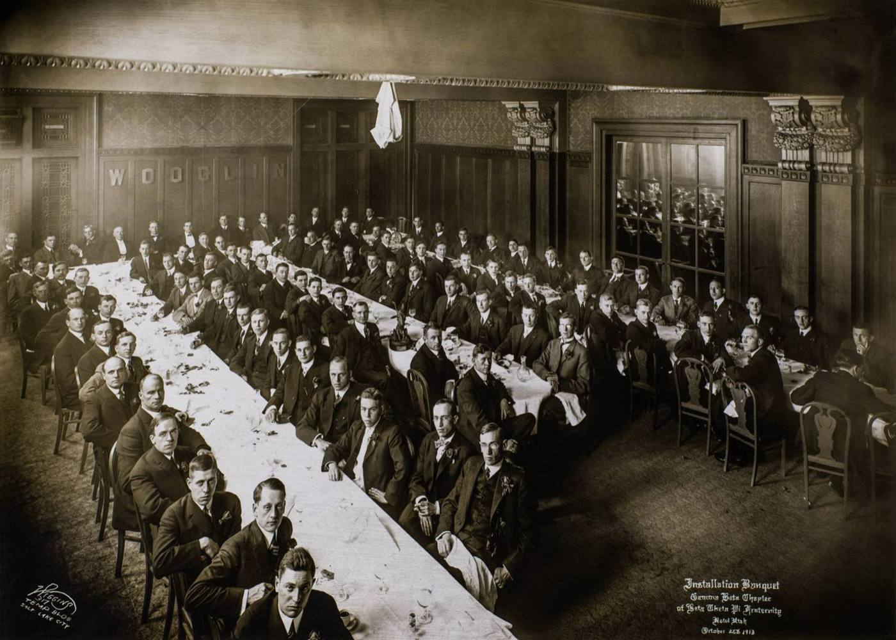
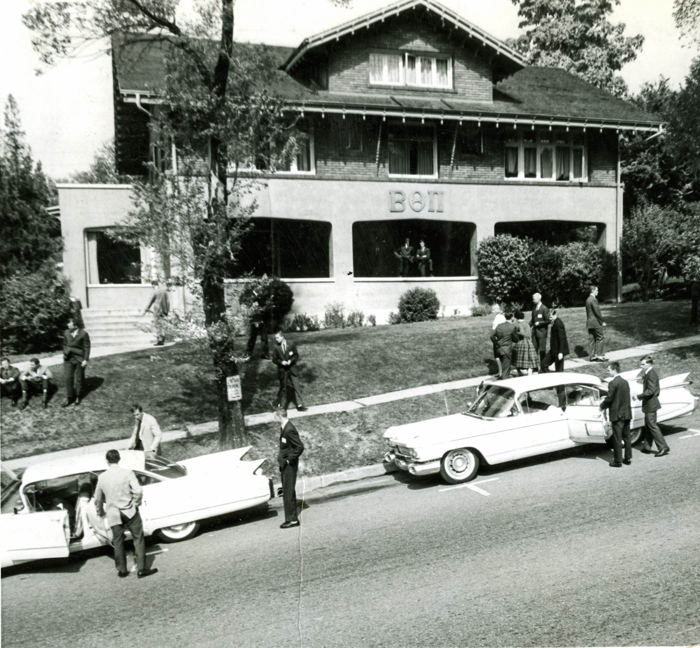
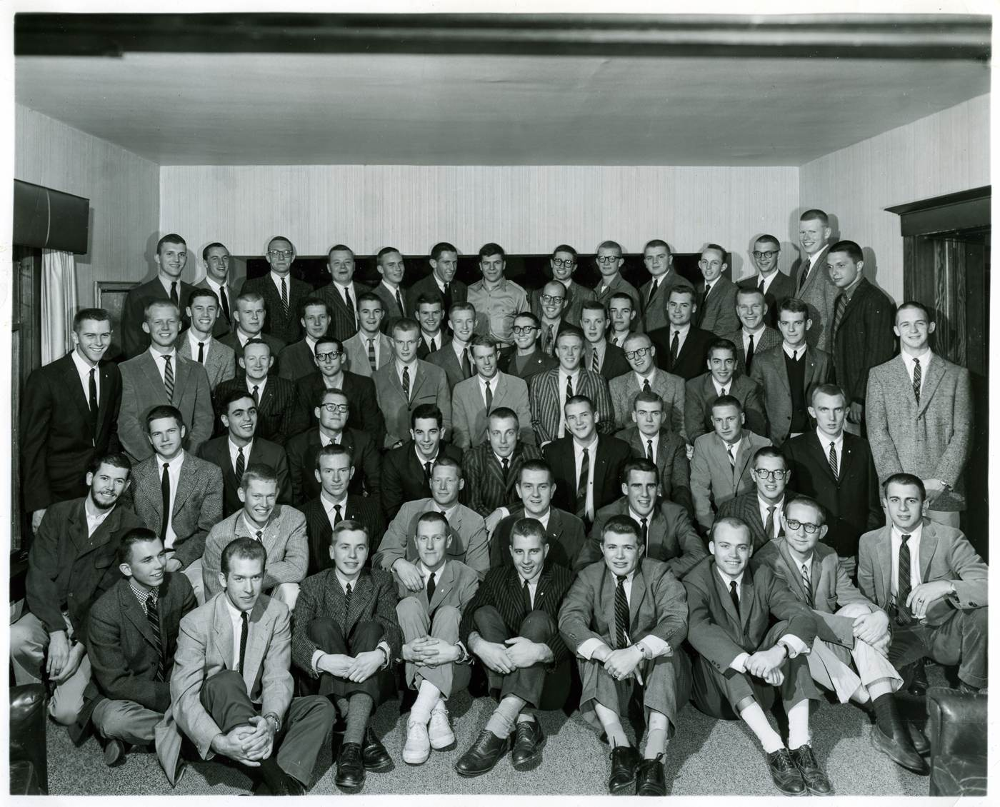
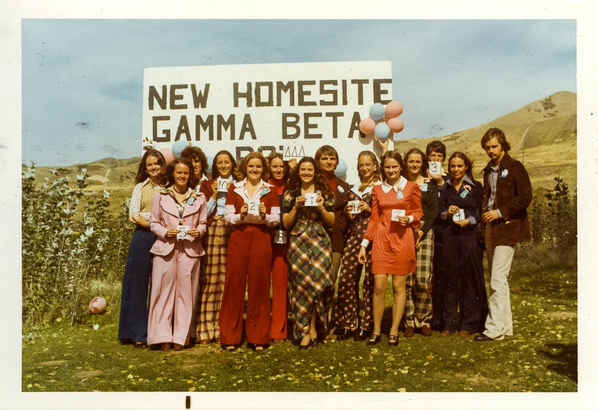
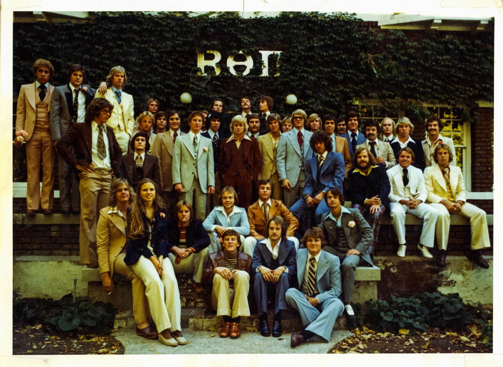
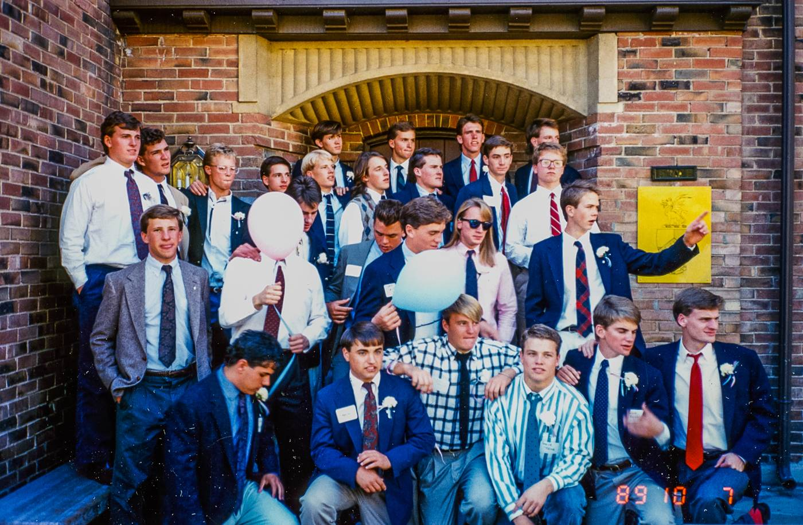
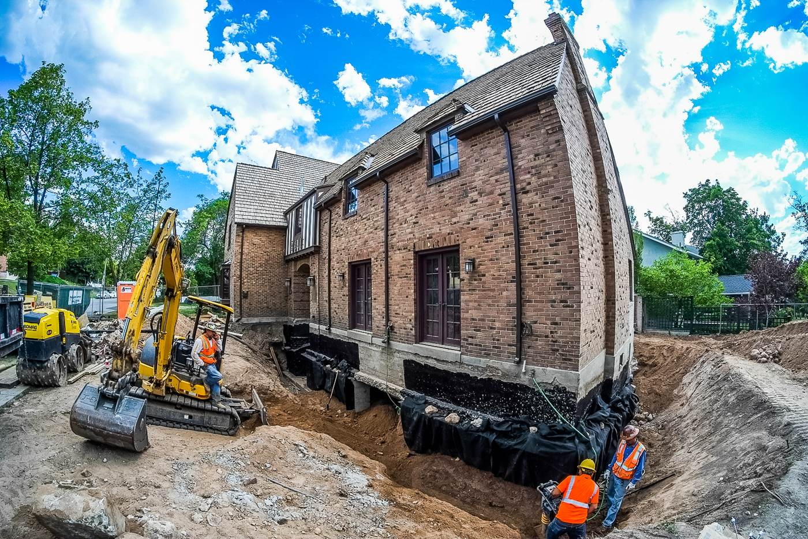
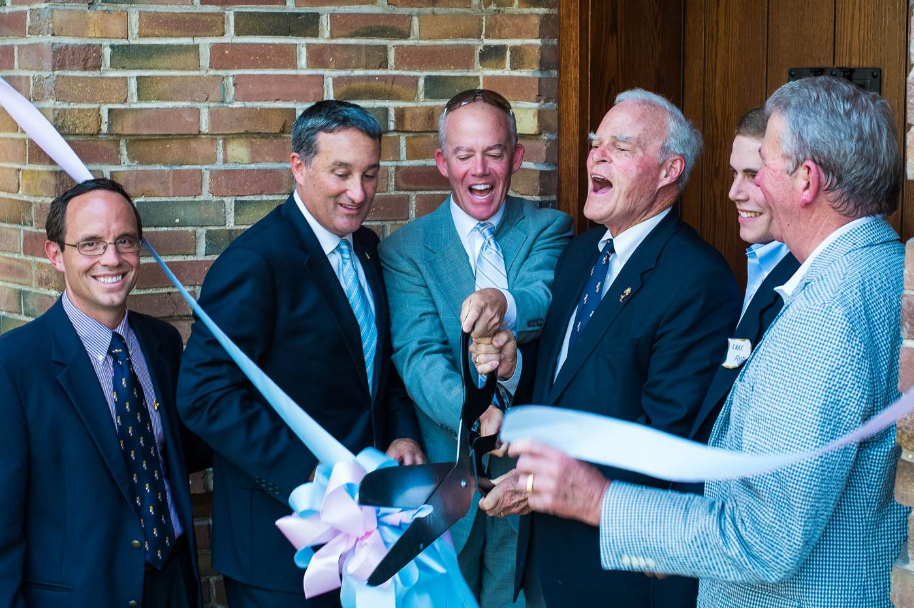
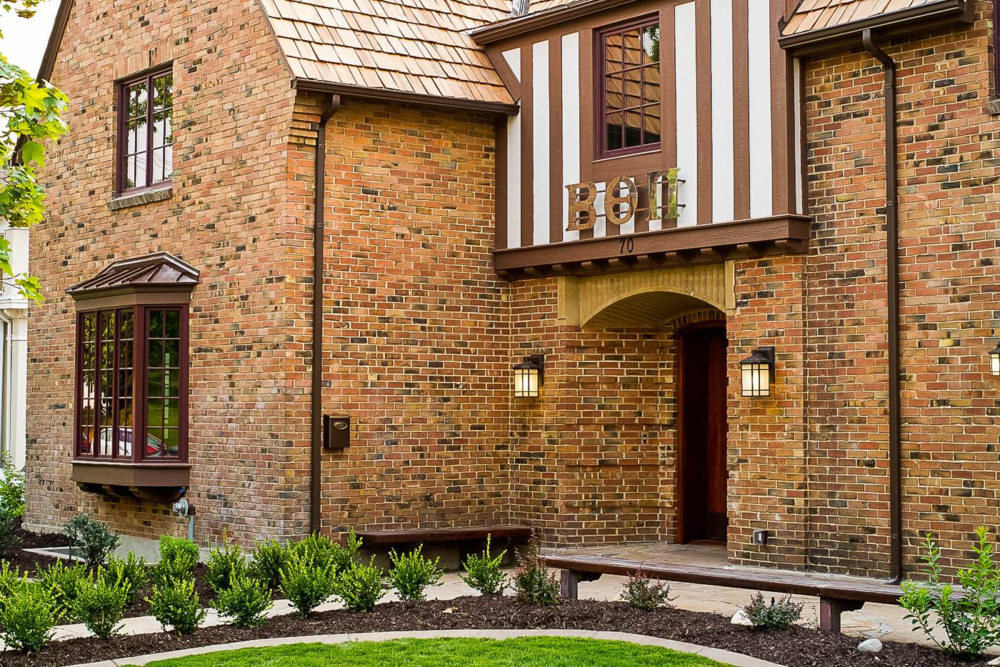
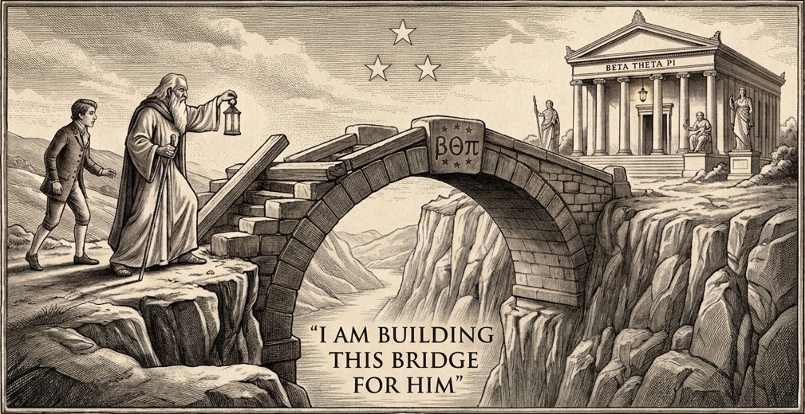

A charter argued for over seven years. A house lost, and taken back. A hundred and thirteen years of men who signed the same book, and are connected by a living ritual…
The record of it returns soon…
Yours in —kai—
